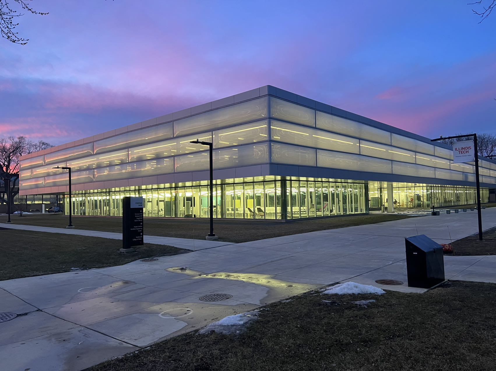
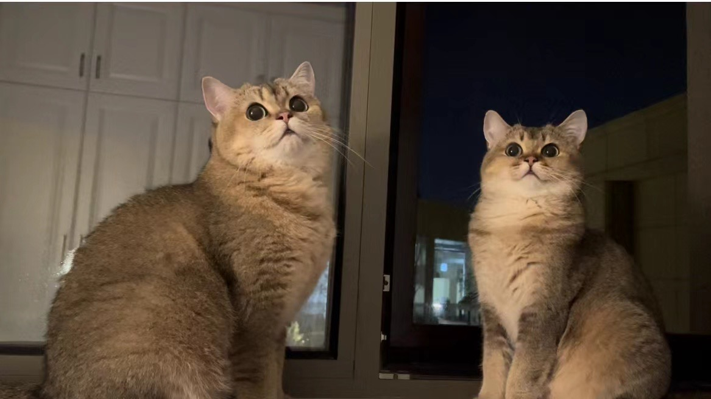

Lida Jiang
Hello, I am Lida, a self-taught designer. I am interested in data-driven design and design research, design planning related topics. Now, I am pursuing the Master of Design degree at Institute of Design at Chicago.

This is the beautiful Chicago dawn shoot at ID after a snow.

I have 2 cats at home, milky tea and coffee, they are now 2 years old and lived with my parents.
I also like video the beautiful items and views in life, here is a short video that I made of a lake view walk :)